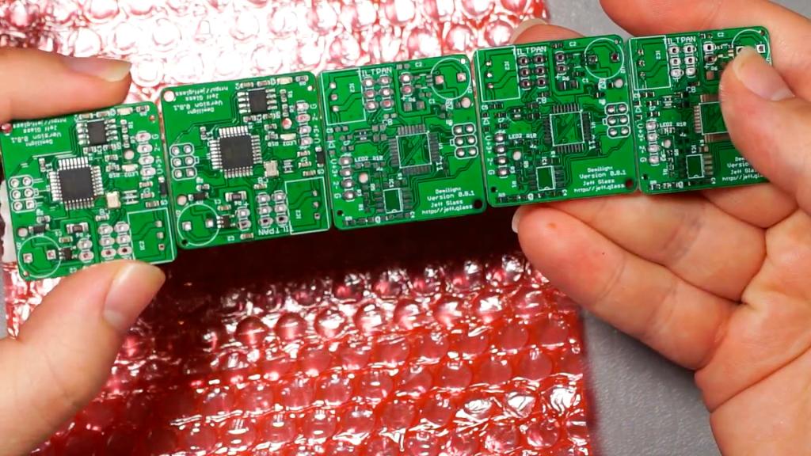

Demilight Version 0.8.1
The newest round of Demilight PCBs and 3D-Prints have taken shape as version 0.8.1. Here's a brief video overview of the current state of thing:
{{< youtube _Rrdo-xNau4 >}}
The biggest change, as I mention in the video, is that I tried out JLCPCB's surface mount parts assembly service for the firs time. Overall, I'm very satisfied, and I'm delighted to have such a useful shortcut for assembly of these PCBs. The version 0.7 and 0.8 prototype boards, which are essentially the same as 0.8 with their 0603 passives and tqfp ATmega, took between 60 and 90 minutes each to assemble. I wouldn't say they were an enormous challenge to assemble, they just took time and concentration.
But now, with JLCPCB assembling the surface mount components, each of the 0.8.1 PCBs took just 3 minutes to finalize assembly, and it's all easy thru-hole parts. As I'm considering making a little flock of these, or providing them to folks who aren't as practiced at soldering, finding ways to accelerate the assembly process is a huge boon.

Of course, there's some additional cost to getting the boards machine-assembled. And for ordering just two assembled boards, of course the unit-cost is going to be high. But it drops off quickly with any kind of scale. I just put in an order for some 0.9 PCBs, and getting 10 of them instead of 2 dropped the unit-cost by almost 70%. All the fixed costs - DHL shipping, extended-part-charges from JLCPCB - start to amortize real quick. Most of the components themselves have a 10- or 20-part minimum order, due to part-loss loading and unloading the pick-n-place machines, so the component cost didn't actually increase all that much except for the expensive IC's (ATmega, AL8860).
Looking forward to 0.9.0.